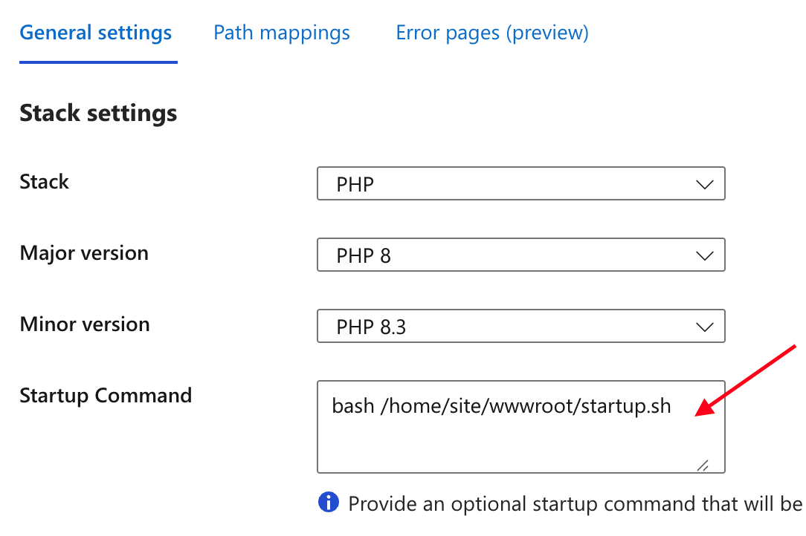
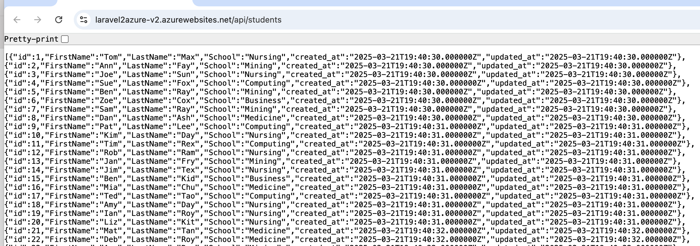
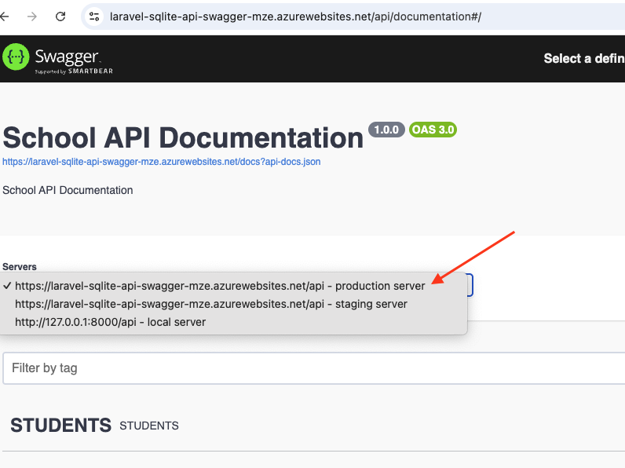

1) Start with 20260402_laravel-sqlite-api-swagger.zip. Download and extract the zip file in a working directory. Note that the Laravel application uses SQLite and is mostly an API app with endpoint /api/students.
2) Add these files to the root of your Laravel web application:
#!/bin/bash
# Stop Nginx
service nginx stop
# Check if school.sqlite exists, and create it if it doesn't
if [ ! -f /home/site/wwwroot/database/database.sqlite ]; then
touch /home/site/wwwroot/database/database.sqlite
chmod 666 /home/site/wwwroot/database/database.sqlite
fi
# Ensure storage directories exist
mkdir -p /home/site/wwwroot/storage/framework/views
mkdir -p /home/site/wwwroot/storage/framework/cache
mkdir -p /home/site/wwwroot/storage/framework/sessions
mkdir -p /home/site/wwwroot/storage/logs
# Set correct permissions
chmod -R 775 /home/site/wwwroot/storage
chmod -R 775 /home/site/wwwroot/bootstrap/cache
chown -R www-data:www-data /home/site/wwwroot/storage
chown -R www-data:www-data /home/site/wwwroot/bootstrap/cache
# Run database migrations and seeders
php /home/site/wwwroot/artisan migrate --force
php /home/site/wwwroot/artisan db:seed --force
# Clear and cache Laravel configurations
php /home/site/wwwroot/artisan cache:clear
php /home/site/wwwroot/artisan config:clear
php /home/site/wwwroot/artisan config:cache
php /home/site/wwwroot/artisan route:clear
php /home/site/wwwroot/artisan view:clear
php /home/site/wwwroot/artisan view:cache
# Copy default Nginx configuration
cp /home/site/wwwroot/default /etc/nginx/sites-available/default
ln -sf /etc/nginx/sites-available/default /etc/nginx/sites-enabled/default
# Start Nginx
service nginx start
server {
listen 8080;
listen [::]:8080;
root /home/site/wwwroot/public;
index index.php index.html index.htm;
location / {
try_files $uri $uri/ /index.php?$args;
}
location ~ \.php$ {
try_files $uri =404;
fastcgi_split_path_info ^(.+\.php)(/.+)$;
fastcgi_pass 127.0.0.1:9000;
fastcgi_index index.php;
include fastcgi_params;
fastcgi_param SCRIPT_FILENAME $document_root$fastcgi_script_name;
fastcgi_param PATH_INFO $fastcgi_path_info;
}
location /50x.html {
root /usr/share/nginx/html;
}
}
3) Initialize a GIT repo with your Laravel app and push it to GitHub. Note that the application already has a .gitignore file in the root folder.
4) Create an App Service >> Web App on Azure with Runtime Stack == PHP. Make sure you to select the Linux operating system.
5) Add these environment variables to your Laravel web app on Azure:
| APP_DEBUG | true |
| APP_STORAGE | /home/site/wwwroot/storage |
| APP_KEY | base64:Dsz40HWwbCqnq0oxMsjq7fItmKIeBfCBGORfspaI1Kw= |
| DB_CONNECTION | sqlite |
| DB_DATABASE | /home/site/wwwroot/database/database.sqlite |
6) On the Azure portal for your web app: Settings >> Configuration >> Stack Settings, enter the following for Startup Command:
bash /home/site/wwwroot/startup.sh

7) Link Azure Laravel site to your GitHub repo through the Deployment Center.
8) In your source code, make a git pull so that you can receive the GitHub actions .yml file in the .github/workflows folder.
Try the website on azure. You should be able to see data in the /api/students endpoint in a browser:

1) Add these statements to startup.sh at bottom of the "# Clear and cache Laravel configurations" block:
php /home/site/wwwroot/artisan l5-swagger:publish
php /home/site/wwwroot/artisan l5-swagger:generate
2) Modify the URLS in the Controller.php so that it contains the deployment URLs
<?php
namespace App\Http\Controllers;
use OpenApi\Attributes as OA;
#[
OA\Info(version: "1.0.0", description: "School API Documentation", title: "School API Documentation"),
OA\Server(url: 'http://127.0.0.1:8000/api', description: "local server"),
OA\Server(url: 'https://laravel-sqlite-api-swagger-mze.azurewebsites.net/api', description: "production server"),
OA\Server(url: 'https://laravel-sqlite-api-swagger-mze.azurewebsites.net/api', description: "staging server"),
OA\SecurityScheme(securityScheme: 'bearerAuth', type: "http", name: "Authorization", in: "header"),
]
abstract class Controller
{
//
}
3) In config/l5-swagger.php:
'generate_always' => env('L5_SWAGGER_GENERATE_ALWAYS', true),
4) In app/Providers/AppServiceProvider.php, import this namespace:
use Illuminate\Support\Facades\URL;
Add this code into the boot() method:
4) Push and deploy app
5) Choose the deployed URL from the dropdown list in the Swagger UI:
